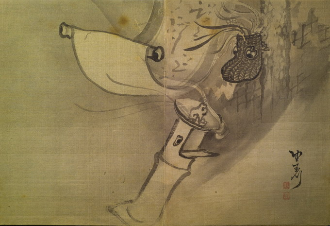

あばら家の中に、花入れと燭台、掛け軸があり、それぞれ目玉がついている。風に吹かれて揺らいでおり、燭台は倒れかかっている。
著作者：玉川（望月玉川）／出典：親書誌：U426_nichibunken_0155：東都画家妖怪画帖；トウトガカヨウカイガチョウ／日付：2010／資源識別子：U426_nichibunken_0155_0002_0000
Copyright (c)2010- International Research Center for Japanese Studies, Kyoto, Japan. All rights reserved.